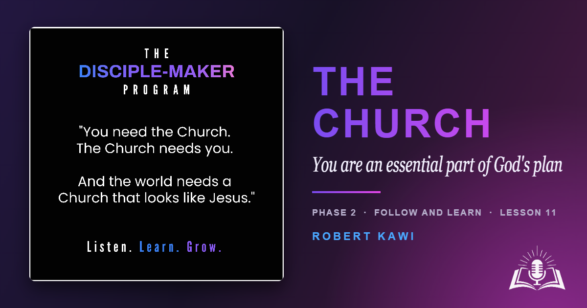

The Church is far more than a building or a weekly event—it's the family Jesus purchased with His own blood. Discover why belonging to a faithful local church is essential for every disciple of Jesus